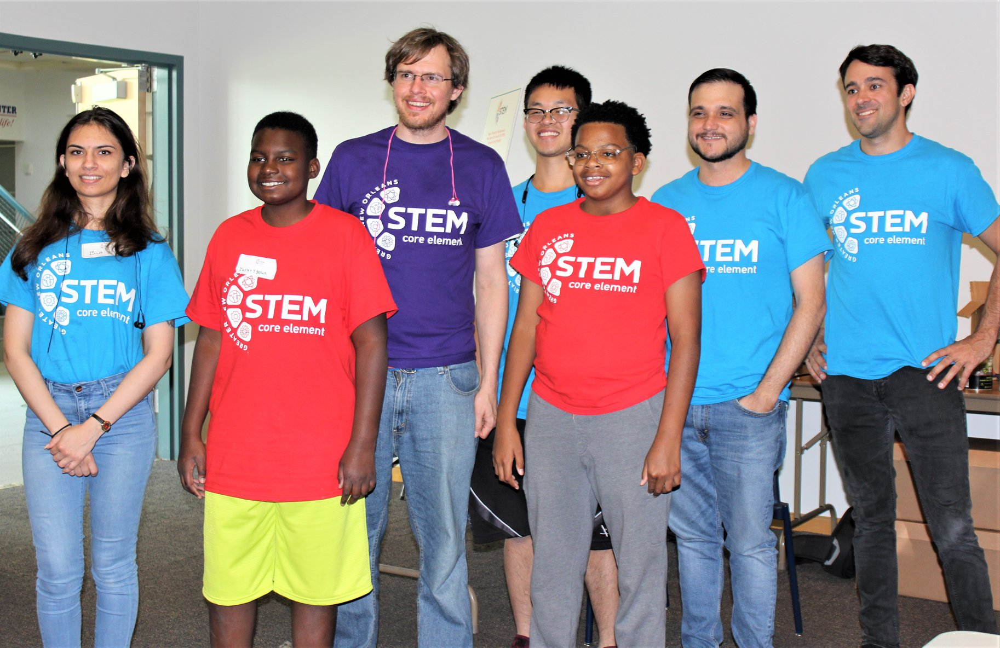

This blog contains my experinces with the coding languages I have picked up over the time studying computer science

Being this was my first programing language, the barrier when learning was mild but all in all now looking back that first Java class wasn't as bad as I was seeing it as. debugging is very easy because of the java complier that is built in java. However, because the user needs to implement a main method when running any java program this in my opinion is a negative.
The reason I learned JavaScript is to help with a coding camp at Greater New Orleans Stem Camp. JavaScript was used to draw the view port and the importing the game engine Phaser3. JavaScript is an easy language to pick up if you learned Java prior to JavaScript (because they both are object-oriented programing languages) however, since there isn't a compiler (because it is ran in a web browser), so debugging is a complicated mess.

the reason I picked up python is because I know eventually I would have to eventually need to use it for my degree focus Cybersecurity. Python is very easy to learn because of the many libraries that are already established. So, you don’t need to make an object "factory" like in other object oriented programing language.
In all if someone had an interest in Computer Science, I would first teach them Python first then teach them Java. Python first because it is easy to get started, and the syntax is straight forward. Java is second on the list because of the time needed to be able to fully understand why the code is structured in that way. JavaScript is a good language to pick up however, since is has a hard way of debugging code this makes it hard for new people to learn.